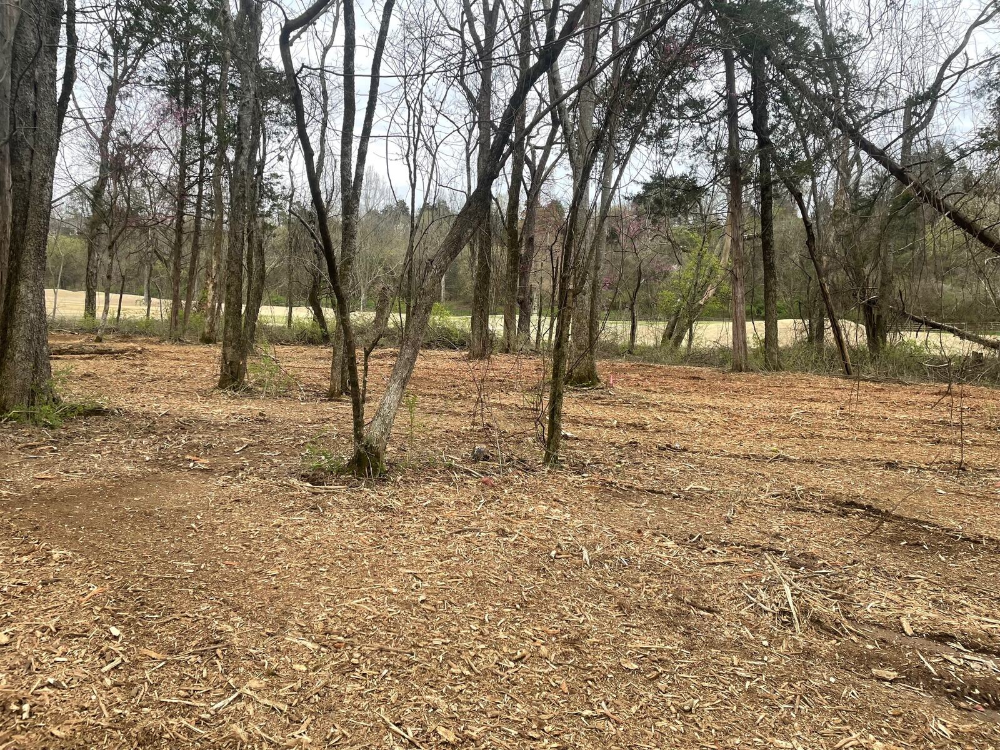

Property ownership has its challenges. For many in Knoxville, overgrown brush, dead trees, and other obstructions prevent full use of the property. Whether you’re ready to elevate your space for a landscaping project or start site preparation for construction, land clearing is often necessary.
So, how much does it cost to clear a piece of land? Read on to learn what our team at The Yard Force has to say about Knoxville land development estimates and the factors that contribute to them.
What Exactly Does Land Clearing Entail?
When many people in and around Knoxville think of land clearing, they often envision bulldozers pushing or cutting vegetation away to create an open space. However, it’s a complex, multifaceted process that typically requires the expertise of local professionals.
The typical land-clearing process includes the following steps:
- Obtaining permits: Knoxville land clearing sometimes requires municipal permits to protect certain areas, wildlife, and bodies of water.
- Removing trees and stumps: Workers use chainsaws, stump grinders, and other equipment to remove trees and their remains.
- Eliminating other vegetation: The team will also remove shrubs, weeds, vines, and other vegetation to prepare the site for development.
- Grading and leveling land: After removing all obstructions, the land-clearing team will grade and level the worksite to ensure the ground’s stability and drainage.
- Removing debris: The last step is to remove, haul, and dispose of the debris. Sometimes, workers burn organic waste onsite as long as it’s permitted.
What’s the Average Cost To Clear Lots and Land in Knoxville?
The price of land clearing in Knoxville varies depending on the project. The average land clearing price per acre falls somewhere between $1,000 and $2,000. Those prices include the service and labor costs.
Factors Affecting Tree and Brush Removal Costs
Even if you know the average land-clearing prices in Knoxville, that doesn’t mean your specific project will fall within that range. Multiple factors contribute to the final costs of this service. Let’s examine the cost factors for clearing wooded lots and other areas in Knoxville, enabling you to make informed decisions about your project.
Property Size
One of the primary factors of land-clearing expenses is property size. Vegetation removal for a spacious yard will likely be less expensive than for a multi-acre lot. The bigger the property, the more workers, equipment, and time are required to free the land of obstructions and ensure proper leveling and grading.
Terrain Type
Property size isn’t the only consideration you must make when estimating land-clearing expenses. The shape of the lot and its terrain can also complicate the process.
Even rocky terrain can be problematic in terms of pricing. Areas with many rocks and boulders could increase the project’s timeline and labor costs. Heavy-duty equipment may be necessary to lift and move these inorganic materials, which adds to the expense.
Vegetation Amount
Does your Knoxville property have a little vegetation or dense trees and shrubbery? Your answer will influence how quickly and efficiently land-clearing teams can handle removal. Eliminating thick underbrush and mature trees is more labor-intensive than clearing sparse vegetation.
You also have to consider debris removal and disposal. Even if your property isn’t densely wooded but has a lot of vegetation, it will take time and effort to haul it away and dispose of it properly. Unfortunately, debris removal is an expense many property owners overlook when clearing their lots.
Accessibility
Accessibility and land clearing cost determination go hand in hand. Hard-to-reach areas present logistical challenges that may necessitate additional planning or specialized transportation to address.
Perhaps your property is easily accessible, but it’s near an environmentally sensitive area. In that case, you may have to pay for environmental assessments to determine how clearing your land will affect nearby ecosystems.
Permits and Approvals
Sometimes, Knoxville land clearing projects don’t require permits and approvals. However, you should expect to need them to ensure your project complies with local regulations and environmental guidelines. Otherwise, you may face hefty fines or delays in your site preparation, which can increase your budget.
Labor
The contractor you hire to remove overgrown vegetation plays a significant role in determining the pricing of land clearing services. The number of workers, their expertise, and the use of specialized equipment for your project can raise or lower costs.
Get a Free Estimate for Your Land Clearing Project in Knoxville Today
Navigating the costs of lot and land clearing in Knoxville doesn’t have to be complicated. Instead of risking your project’s success with DIY efforts, it’s best to hire a skilled company with the right tools and expertise.
At The Yard Force, we offer affordable land clearing, along with top-tier grading and excavation services. Despite our competitive prices for Knoxville, Tennessee, property owners, we never cut corners or compromise the quality of our workmanship. To request your free estimate, contact our team online or call (865) 290-8815.